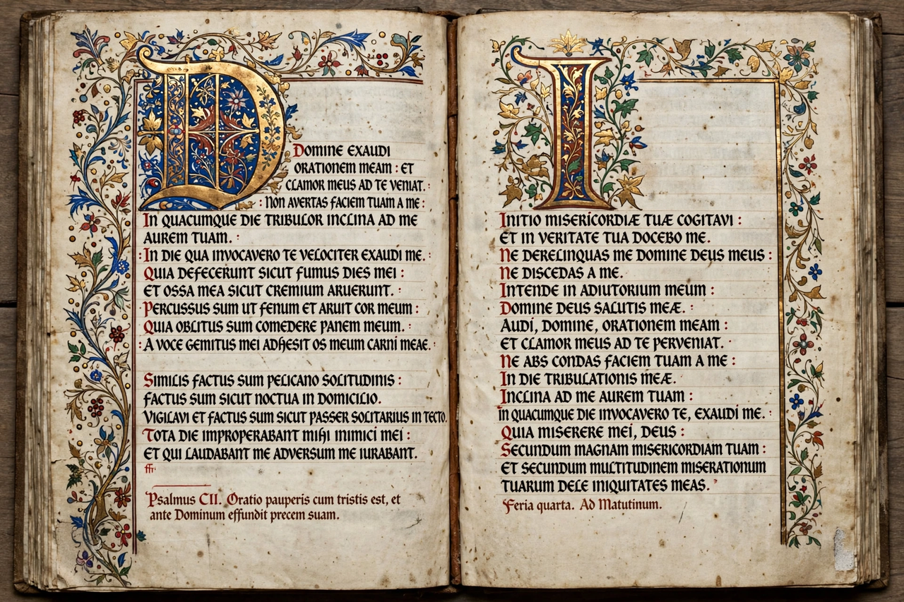

 |
A codex (plural: codices) is the historical ancestor of the modern book: a handwritten manuscript bound as a collection of pages stitched together along one side. The codex replaced the scroll as the main form of book in the Western world by late antiquity. The word derives from the Latin caudex, meaning a block of wood or book of wooden tablets. The codex form provides random access to any page, uses both sides of the writing material, is compact and portable, and is easy to reference — advantages that remain in the modern printed book.
The codex developed from wooden wax tablets that the Romans bound together for notes. By the 1st century AD, parchment notebooks in codex form were in use; the poet Martial praised them as convenient gifts. Early Christians adopted the codex with striking consistency for their scriptures — possibly for economy, portability, and ease of cross-reference — at a time when pagan literature was still mostly written on scrolls. By the 4th century the codex had become the standard book form in the Greco-Roman world; great parchment Bibles such as Codex Vaticanus and Codex Sinaiticus survive from this period.
Medieval codices were produced by hand in scriptoria, written on parchment (later paper) prepared from animal skins or plant fibres, and often richly decorated with illuminations. Famous examples include the Lindisfarne Gospels, the Book of Kells, and the Codex Gigas. In Mesoamerica, the Maya and Aztecs independently produced screen-fold codices of bark paper or deerskin painted with glyphs; most were destroyed during the Spanish conquest, though a few survive, such as the Dresden Codex.
The printing press of Gutenberg (c. 1450) initially imitated the manuscript codex in format and layout. Printing standardized the codex's furniture — title pages, page numbers, tables of contents, and indices — but its basic architecture of folded sheets gathered and bound at the spine is that of the ancient codex.
The study of codices as physical objects — their materials, construction, binding, and production — is called codicology. It complements palaeography, the study of handwriting, in dating and localizing manuscripts and reconstructing the transmission of texts.
This article is a recreation from memory in the style of Wikipedia.